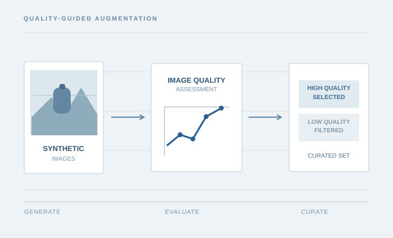

RESEARCH CONCEPT / GENERATIVE DATA CURATION
Quality-aware synthetic data for construction object detection
Investigating how the quality of AI-generated images influences object detection performance, and how image quality assessment can guide synthetic-data selection for different construction objects.
GENERATIVE AI · IMAGE QUALITY ASSESSMENT · OBJECT DETECTION
Related manuscript